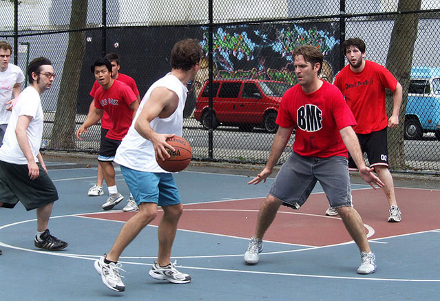
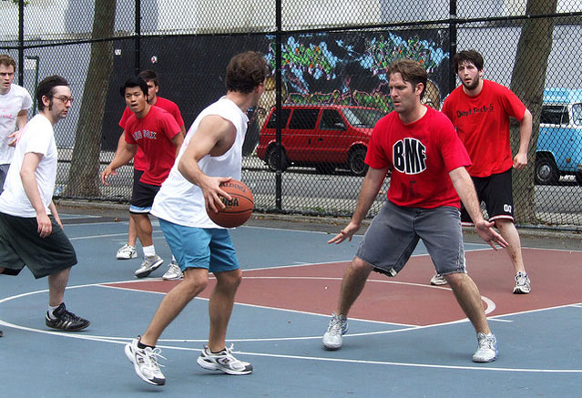
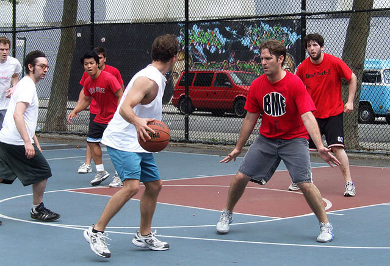

Located between Dean Street and 6th Avenue in Prospect Heights, Dean Street Playground is place for young ballers looking to develop their skills through practice and enjoy friendly pickup games with friends.

 
